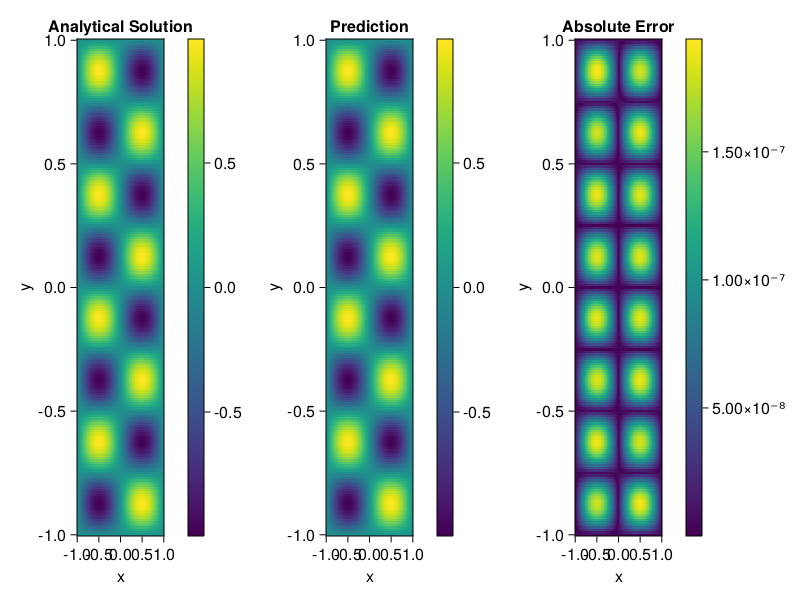

Helmholtz equation
Let us consider the Helmholtz equation in two space dimensions
\[\begin{aligned} &\Delta u(x, y)+k^{2} u(x, y)=q(x, y), \quad(x, y) \in \Omega:=(-1,1)^2 \\ &u(x, y)=0, \quad(x, y) \in \partial \Omega \end{aligned}\]
where
\[q(x, y)=-\left(a_{1} \pi\right)^{2} \sin \left(a_{1} \pi x\right) \sin \left(a_{2} \pi y\right)-\left(a_{2} \pi\right)^{2} \sin \left(a_{1} \pi x\right) \sin \left(a_{2} \pi y\right)+k^{2} \sin \left(a_{1} \pi x\right) \sin \left(a_{2} \pi y\right).\]
The excat solution is $u(x,y)=\sin{a_1\pi x}\sin{a_2\pi y}$. We chose $k=1, a_1 = 1$ and $a_2 = 4$.
using ModelingToolkit, IntervalSets, Sophon, Lux
using Optimization, OptimizationOptimJL
@parameters x,y
@variables u(..)
Dxx = Differential(x)^2
Dyy = Differential(y)^2
a1 = 1
a2 = 4
k = 1
q(x,y) = -(a1*π)^2 * sin(a1*π*x) * sin(a2*π*y) - (a2*π)^2 * sin(a1*π*x) * sin(a2*π*y) + k^2 * sin(a1*π*x) * sin(a2*π*y)
eq = Dxx(u(x,y)) + Dyy(u(x,y)) + k^2 * u(x,y) ~ q(x,y)
domains = [x ∈ Interval(-1,1), y ∈ Interval(-1,1)]
bcs = [u(-1,y) ~ 0, u(1,y) ~ 0, u(x, -1) ~ 0, u(x, 1) ~ 0]
@named helmholtz = PDESystem(eq, bcs, domains, [x,y], [u(x,y)])\[ \begin{align} \frac{\mathrm{d}}{\mathrm{d}y} \frac{\mathrm{d}}{\mathrm{d}y} u\left( x, y \right) + \frac{\mathrm{d}}{\mathrm{d}x} \frac{\mathrm{d}}{\mathrm{d}x} u\left( x, y \right) + u\left( x, y \right) =& - 166.78 \sin\left( 3.1416 x \right) \sin\left( 12.566 y \right) \end{align} \]
Note that the boundary conditions are compatible with periocity, which allows us to apply BACON.
chain = BACON(2, 1, 5, 2; hidden_dims = 32, num_layers=5)
pinn = PINN(chain) # call `gpu` on it if you want to use gpu
sampler = QuasiRandomSampler(300, 100)
strategy = NonAdaptiveTraining()
prob = Sophon.discretize(helmholtz, pinn, sampler, strategy)
@time res = Optimization.solve(prob, BFGS(); maxiters=1000)u: ComponentVector{Float64}(filters = (filter_1 = (bias = [0.1927924519764273; -0.8518406702690965; … ; 0.8890225853355703; 0.9891690984830771;;]), filter_2 = (bias = [0.015195200120569338; 1.05383294728049; … ; 0.1539202356079792; -0.8337709413670742;;]), filter_3 = (bias = [-0.5635435667912667; 0.7627488502339315; … ; 0.24756614497577134; 0.2311964884141858;;]), filter_4 = (bias = [0.8127449547491646; 0.2759611178657046; … ; 0.010724062737870844; 0.05291770031584073;;]), filter_5 = (bias = [-0.20743537527677036; -0.9030651159684944; … ; 0.7115788802212678; 0.5876918421589862;;])), linear_layers = (layer_1 = (weight = [-0.2129664691133986 -0.26062706426904014 … -0.33000389679003045 -0.12294299509782186; -0.006064858984350591 0.40022545477424576 … -0.016328967384373297 -0.0970875218312606; … ; 0.34583192146781894 0.32956494672085107 … -0.14308712301331697 -0.2546461127934394; 0.17011131827909798 0.2059609923775178 … 0.057744163221990844 -0.39976566076190745], bias = [-0.04769228032293163; 0.023781915240244953; … ; -0.004914373009962489; -0.0017544122490824898;;]), layer_2 = (weight = [-0.047632182209371994 0.32396389708167683 … -0.1241868041467888 -0.003120715820326861; -0.08171825213882489 -0.3163959230864987 … 0.18596325415932402 0.32898177688925806; … ; -0.16381866937990353 -0.3083505978945002 … 0.26173232989464446 -0.3341158721001637; -0.10811797100946403 0.19764861559270638 … 0.19467039969646138 0.19101996287829617], bias = [-0.008099885633173163; 0.023795600887711835; … ; 0.03303470164319721; 0.005094902973083439;;]), layer_3 = (weight = [-0.2036565258453309 0.209044804412203 … 0.03645884784599658 -0.2394863167269073; -0.20563257698947005 -0.32122572014805845 … 0.39014148682376104 0.25702974048005867; … ; -0.08576066851993402 -0.3511017705535528 … -0.3174972155129998 -0.047228746373995587; -0.09520092816615809 0.1302591100917875 … -0.17559017693147613 -0.05287723013813477], bias = [0.01594820943652202; -0.0180884041623198; … ; -0.0010490582612772605; 0.021325035096813227;;]), layer_4 = (weight = [0.3442719236588421 -0.08982360637012658 … 0.29270394675839717 -0.4247348529496995; 0.18808976625268012 0.39471228733317015 … 0.04579934901558348 -0.1255058798134853; … ; 0.1825139048860875 -0.3839231517064751 … -0.16222657382180863 0.33203144775937254; -0.2324421404519257 0.03355519041173558 … -0.2862101094216857 0.3544283144545957], bias = [0.0019020587312895282; 0.028709896242868068; … ; -0.0015880712559528851; 0.001325677402940345;;])), output_layer = (weight = [0.05886361163376535 -0.7071206885137228 … -0.22862865074928293 -0.003850001083455384], bias = [-0.06597391836647348;;]))Let's plot the result.
phi = pinn.phi
xs, ys= [infimum(d.domain):0.01:supremum(d.domain) for d in domains]
u_analytic(x,y) = sinpi(a1*x)*sinpi(a2*y)
u_real = [u_analytic(x,y) for x in xs, y in ys]
phi_cpu = cpu(phi) # in case you are using GPU
ps_cpu = cpu(res.u)
u_pred = [sum(phi_cpu(([x,y]), ps_cpu)) for x in xs, y in ys]
using CairoMakie
axis = (xlabel="x", ylabel="y", title="Analytical Solution")
fig, ax1, hm1 = heatmap(xs, ys, u_real, axis=axis)
Colorbar(fig[:, end+1], hm1)
ax2, hm2= heatmap(fig[1, end+1], xs, ys, u_pred, axis= merge(axis, (;title = "Prediction")))
Colorbar(fig[:, end+1], hm2)
ax3, hm3 = heatmap(fig[1, end+1], xs, ys, abs.(u_pred-u_real), axis= merge(axis, (;title = "Absolute Error")))
Colorbar(fig[:, end+1], hm3)
fig